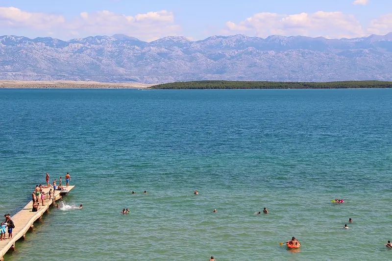
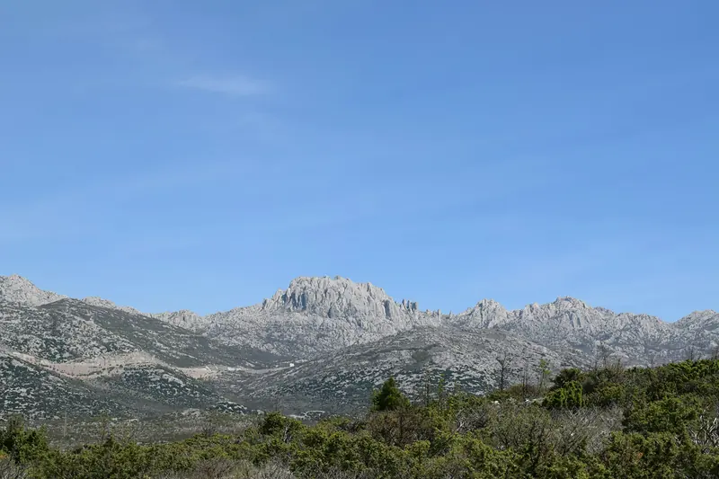
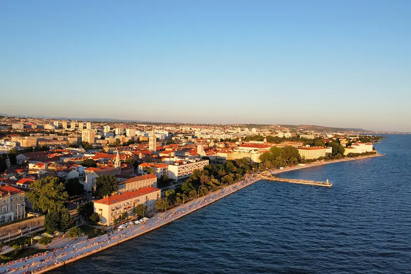
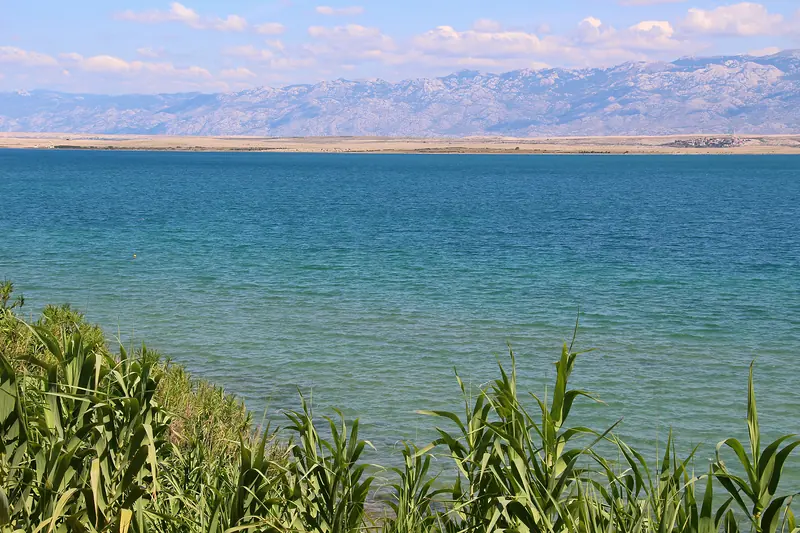
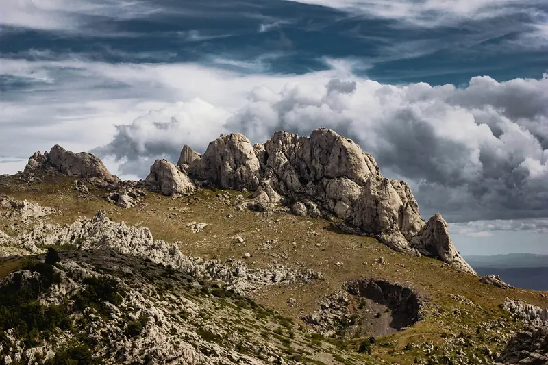
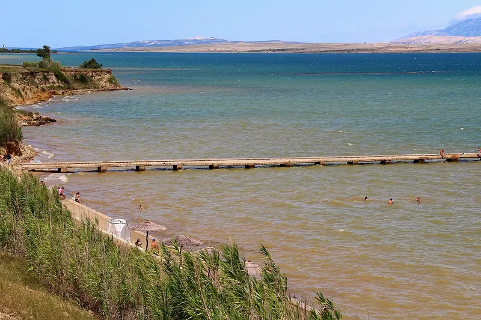
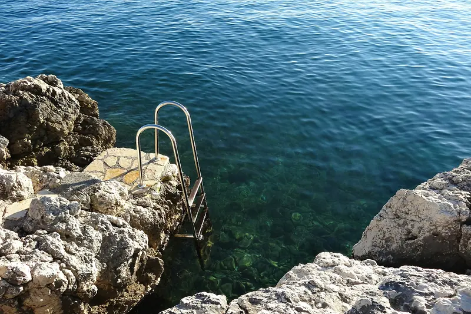
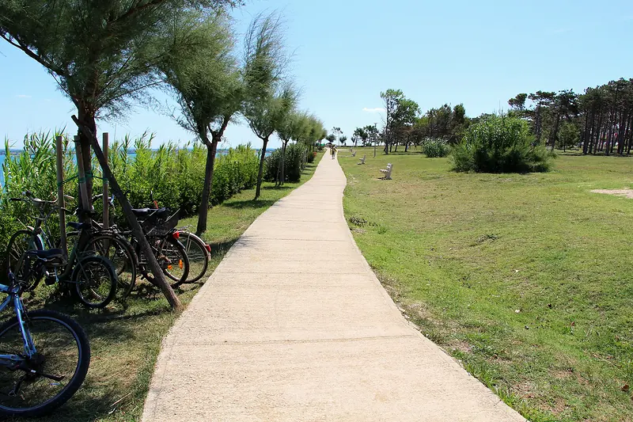
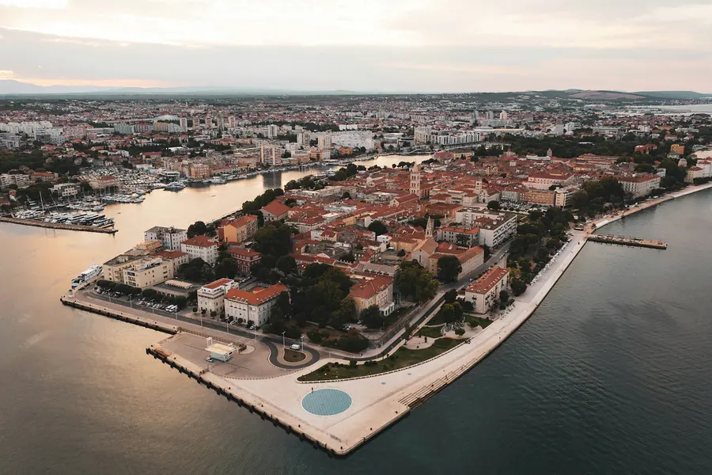

Pláž Sabunike · foto Fred Romero, CC BY 2.0
More
Piesok a plytké more
Sabunike sú známe dlhou piesočnatou plážou a plytkou, rýchlo prehriatou vodou. Obľúbili si ich rodiny s deťmi aj kitesurferi. Ostrov Vir je hneď za mostom.
Privlaka – SabunikeZadarská riviéra
Tri vilové domy s 27 apartmánmi, bazénmi a súkromnými strešnými terasami. Na polostrove s piesočnatými plážami, s Velebitom na obzore.
Právoplatné stavebné povolenie · výstavba v príprave
Sabunike · foto Fred Romero
Jadran Hills
Jadran Hills vzniká v Sabunikoch, pokojnej časti Privlaky pri Zadare. Polostrov lemujú dlhé piesočnaté pláže s plytkým morom, za zálivom sa dvíha hradba Velebitu. Architektúra je jednoduchá a otvorená: veľké posuvné steny, kryté terasy a strechy, ktoré patria slnku.
Lokalita
Privlaka leží na úzkom polostrove severne od Zadaru. Je to miesto dlhých pláží, borovíc a západov slnka – a zároveň dobrý východiskový bod do mesta aj do hôr.

Pláž Sabunike · foto Fred Romero, CC BY 2.0
More
Sabunike sú známe dlhou piesočnatou plážou a plytkou, rýchlo prehriatou vodou. Obľúbili si ich rodiny s deťmi aj kitesurferi. Ostrov Vir je hneď za mostom.

Velebit · foto Kristina Kutleša
Hory
Hrebeň Velebitu vidno z pobrežia po celý rok. Do národného parku Paklenica s kaňonmi a horolezeckými stenami je to približne hodina cesty.

Zadar · foto Val Begic
Mesto
Rímske fórum, Morský organ a Pozdrav slnku sú vzdialené asi 20 km. Historický Nin so soľnými poľami je ešte bližšie.
Projekt
Každý dom má tri podlažia a deväť apartmánov. Veľké posuvné steny otvárajú obývacie izby na kryté terasy, najvyššie podlažie patrí súkromným strešným terasám.
7,4 × 2,7 m, so šetrnou úpravou vody soľou a vonkajšou sprchou.
52 až 89 m² s pergolou pre apartmány na najvyššom podlaží.
Približne 12 m² za veľkou posuvnou stenou – obývačka pokračuje von.
Klimatizácia v každom apartmáne, v kúpeľniach podlahové kúrenie.
Navrhnutá ako budova s takmer nulovou potrebou energie.
Autom až k domu, bez hľadania miesta v sezóne.
Apartmány
V každom dome je šesť apartmánov s dvoma spálňami a tri s jednou spálňou. Vyberte si podlažie.
Z obývacej izby vyjdete cez posuvnú stenu rovno na krytú terasu a ďalej do záhrady.
Rovnaké dispozície ako na prízemí, s krytou terasou vo výške korún stromov.
Ku každému apartmánu patrí vlastná strešná terasa s pergolou – miesto na raňajky, večeru aj hviezdy.
Výmery sú zaokrúhlené podľa projektovej dokumentácie. Pôdorysy, cenník a dostupnosť pošleme na vyžiadanie.
Vyžiadať pôdorysy a cenníkGaléria






Stav projektu
Kúpený a pripravený.
Hlavný projekt všetkých troch domov je hotový.
Právoplatné.
Práve prebieha – výber dodávateľov a financovanie.
Termíny oznámime po začatí stavby.
Kontakt
Napíšte nám. Pošleme vám pôdorysy, cenník a aktuálnu dostupnosť – a radi odpovieme na všetko ostatné.
Západ slnka pri Zadare · foto Lukas Zischke